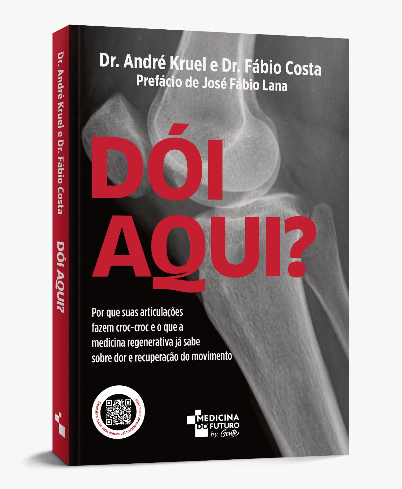

Artrose ou artrite?
O que é a artrose, por que ela aparece e a diferença para a artrite, explicada sem termos difíceis.
Guia gratuito para pacientes
Um guia de 30 páginas sobre artrose: o que acontece na articulação, a diferença entre artrite e artrose, sintomas, fatores de risco, como é feito o diagnóstico e um panorama dos tratamentos, do remédio e da fisioterapia aos procedimentos e à cirurgia. Em linguagem de consultório e sem promessas: a indicação de cada opção depende sempre da avaliação médica individual.
PDF gratuito de 30 páginas · Escrito pelo Dr. André Kruel · CRM-RS 23627
Preencha os dados abaixo. Em seguida, o PDF fica disponível para download imediato.
Obrigado pelo interesse. Clique abaixo para baixar o PDF agora. Se quiser ir além, o livro Dói Aqui? aprofunda o tema com a mesma linguagem clara.

O livro Dói Aqui? traz uma conversa completa sobre dor musculoesquelética e medicina regenerativa.
Conhecer o livro Dói Aqui?Conteúdo pensado para a conversa de consultório, direto e acessível.
O que é a artrose, por que ela aparece e a diferença para a artrite, explicada sem termos difíceis.
Os sinais mais comuns, os fatores de risco e como os exames ajudam a entender cada caso.
Remédios, fisioterapia, procedimentos e cirurgia: o papel de cada um e por que o plano é individual.
Livro · Editora Gente
Se o ebook abre a porta, o livro aprofunda: uma leitura acolhedora sobre dor musculoesquelética, opções de cuidado e o papel da medicina regenerativa, com a mesma honestidade clínica, sem promessas de cura.